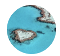

エリア一覧
-
日本
-
北米
-
アジア
-
ヨーロッパ
-
中南米
-

オセアニア
-
中東
-
アフリカ
おすすめタグ一覧
- #グルメ
- #デートスポット
- #カフェ
- #東京の観光スポット
- #居酒屋
- #旅館
- #イベント
- #鎌倉
- #ホテル
- #東京のグルメ
- #国内
- #スイーツ
- #絶景
- #温泉
- #お土産
- #ラーメン
- #大阪のグルメ
- #パンケーキ
- #ディズニー
- #沖縄のホテル
- #東京のホテル